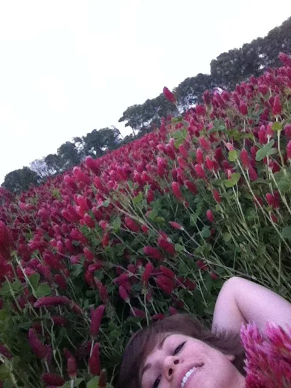

Blog · November 7, 2012
A Bucket List
US Presidential Elections 2012 have me thinking about awesomeness. Ironically, the time of year that America divides decisively into two halves, seemingly uniting only in declaring their unfettered hate of each another, makes me think about how much I love it when these sentiments don’t dominate conversation. Remember that time when we landed Curiosity on Mars? Remember how awesome that was? Yes, you do. Humanity rocks.
Tonight seems appropriate, then, to dig up and publish the old Bucket List. That’s right – I have one. It’s in Google Docs. I keep it real(time updated). Browse the magna carta of Amyian wonderfuel.
No time like the present, as Tibolt says, to “take action on your ideas. Action generates inspiration!”
First, four Bucket List Accomplishments:
1. Learn to Surf
Completed: August 2009
One summer I happened upon a housesitting gig in Honolulu, Hawaii. Thanks to a nicely timed Facebook status update from an old high school friend (these were the days when we weren’t constantly fbing) and a spontaneous me, I decided that if I did not take this opportunity to live in Hawaii, I would probably regret it in five years. On two weeks notice, I hauled out. A month later I checked surfing off the bucket list.
A sensible bucket lister would include things like summiting a volcano or cliff jumping..but no, the only thing that counted towards bucket lis mastery on that excursion was in fact learning to surf. Shaka and mahalo to my lovely local friends who patiently waited as I battled swell after swell before finally hanging ten. Below: Brent Nakano, little sister Sara who came out to visit, and yours truly.
2. Run through a field of flowers
Completed: April 2011
It was so great that I didn’t just run through them, I sprawled out and basked in the awesomeness of 360 degree pink-tipped clover. And then I added more flower sprints to my Bucket List futures.

3. Skydive
Completed: Summer 2004
The summer after high school, I decided to jump out of a plane. This is the decision process that goes into most of my bucket list feat completions, or life in general. I want to X. I do X. There is a video of this dive..somewhere. The guys who made it liked heavy metal and as I recall it’s set to limp bizkit. Rock on, 2009 bro.
4. Play with penguins
Completed: April 2012
Because who doesn’t want to hug a penguin? They’re fucking awesome. Tiny feathered tuxedoed demolishers of fish with winds apparently strong enough to break an adult’s femur yet the little buggers still can’t get airborne. This shenanigan actually got me published in the Huffington Post via Quora (a most amazing social network).
That’s it. In 26 long years I’ve completed four Bucket List items. A whopping one item every 6.5 years. Better step it up if I want to finish in my one and only lifetime.
Next, Future adventures:
- Go to space
- Have sex in space
- new: run through fields of: blooming lavender, dutch tulips and a blooming south african meadow
- Visit Machu Picchu
- Speak at TED
- Own a ridiculously fast, energy efficient convertible sports car
- live in Asia
- new: skydive in a wingsuit somewhere with beautiful scenery
- be able to balance a handstand for one minute
- New Years on Copacabana Beach in Rio de Janeiro, Brasil
- become proficient in the most advanced mathematics
- jump off the roof of a building into: a pile of snow; a swimming pool
- ride a giraffe
- scuba dive in waters inhabited by bioluminescent creatures
That’s my entire bucket list. I also want to understand consciousness but that doesn’t really feel appropriate next to “live in Asia,” it’s not really a bucket list item so much as the purpose of my life.
Now, thanks in part to US elections, my bucket list is public. You should make yours public, too. Inspire people! Make a google doc of your bucket list and publish it on the web. Share a link in the comments or post it on Quora.
Finally, the point of this post is to overcome partisanship and remember human awesomeness. I’ll leave you with a #lifebonus video from my friend John Boswell, the beautiful mind behind Symphony of Science:
First published on my old blog, amyrobinson.wordpress.com, November 7, 2012.